FOC
Fall out Community
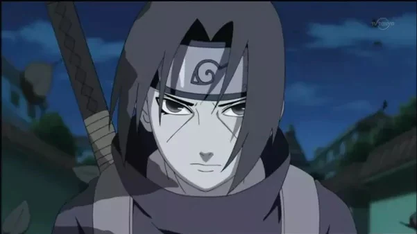
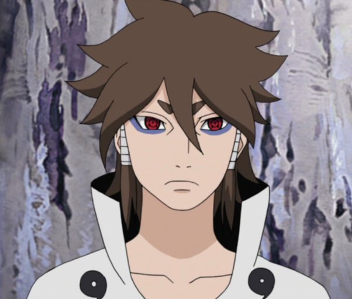
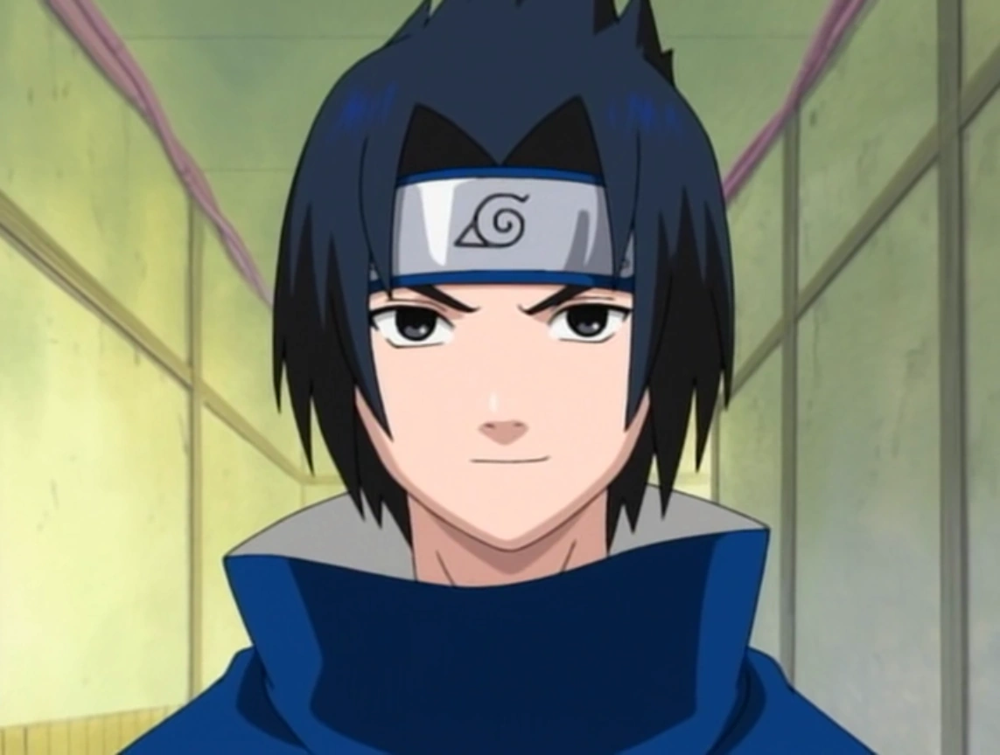
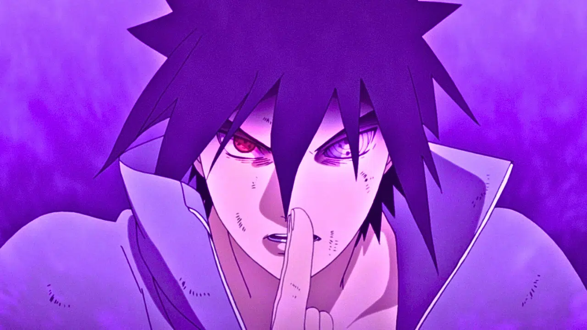
Qui est Katsu Uchiha
Katsu est un jeune uchiha et ninja du village de Konoha, âgé de 12 ans seulement il mesure 1,56m, dû à sa prédisposition au contrôle du chakra et au connaissance actuel de Katsu, il sortira de l'académie à l'âge de 12 ans seulement. Il maîtrise le Katon et le Kiminari. Son entraînement se porte surtout sur le kenjutsu et le ninjutsu. Il a une appétence pour le combat et la stratégie militaire. Dès son plus jeune âge, Katsu n'arrivera pas à se lier avec les autres enfants de son âge, beaucoup trop mature pour son âge, il comprendra très vite les enjeux de la vie et de la mort. Il est le fils de Satsujin Uchiha et petit fils du grand Tetsuya Uchiha. Katsu dès son plus jeune âge a acquis deux valeurs et principes essentiels, la fidélité et le sens de l’honneur.

Génie
de la stratégie
Curieux
touche à tout
Sens de l'Honneur
infaillible
Calculateur
de naissance
Maniaque
Routine parfaite
Loup
Solitaire
Généalogie
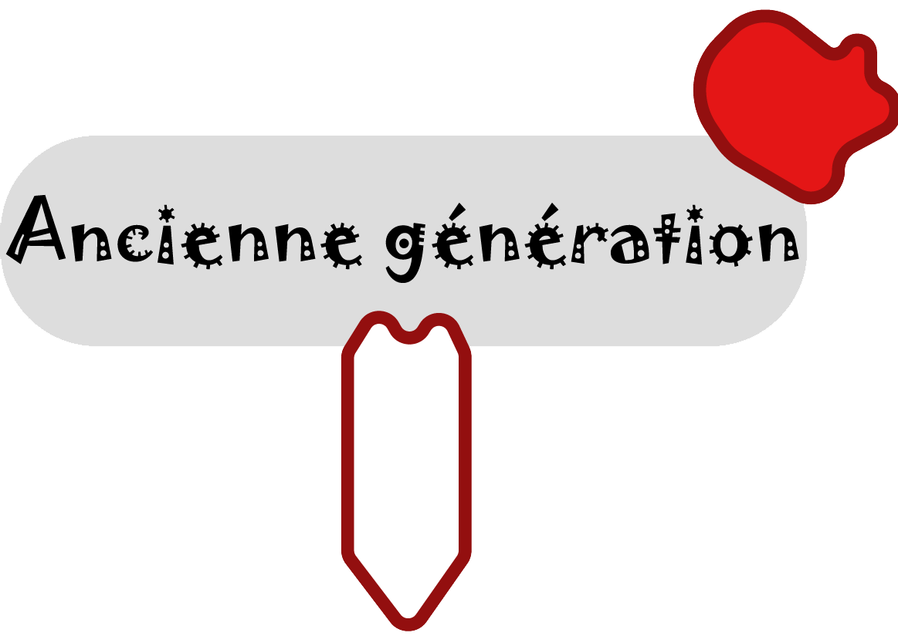
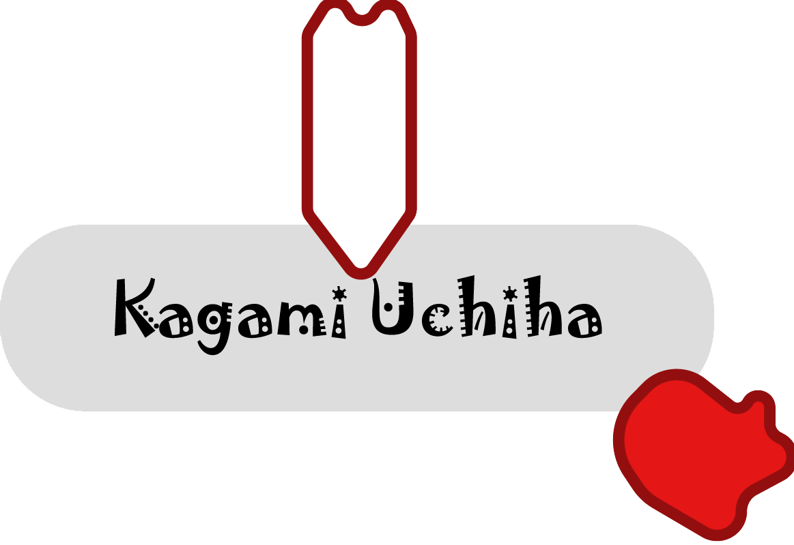 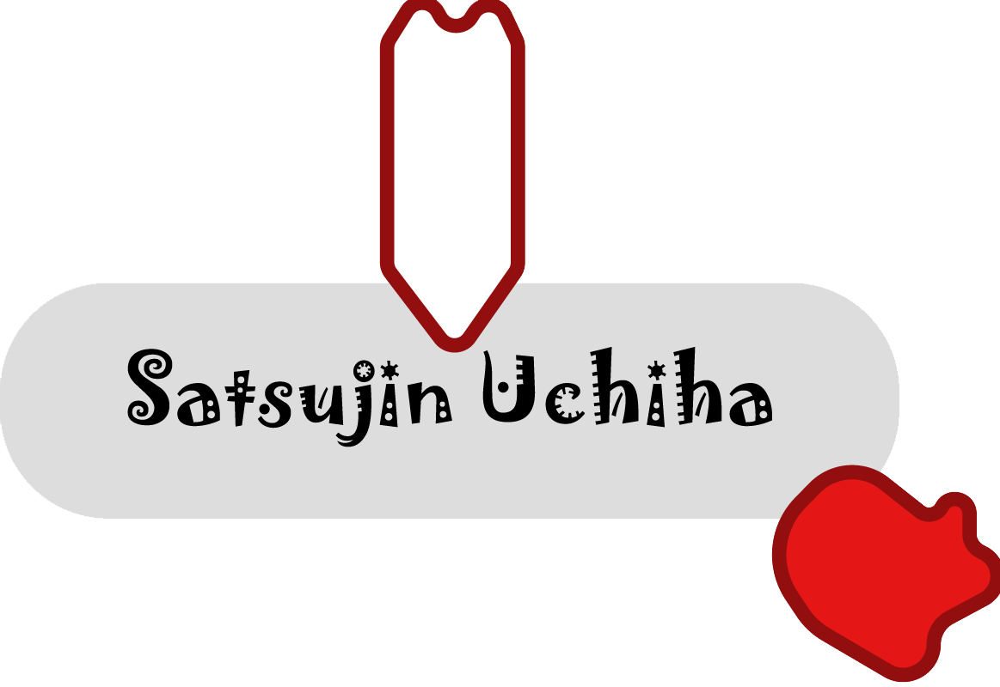
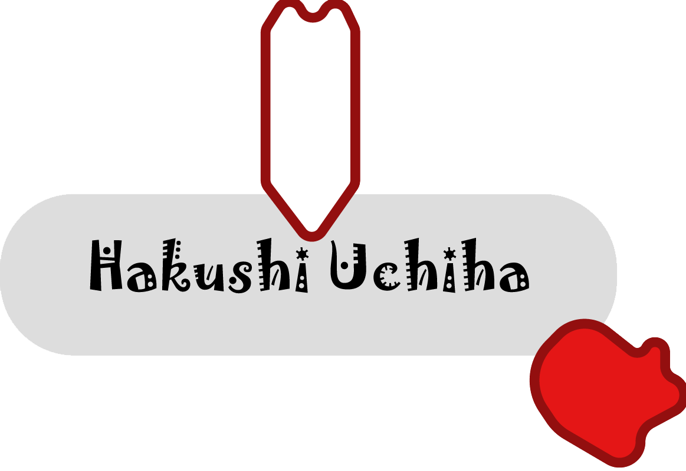
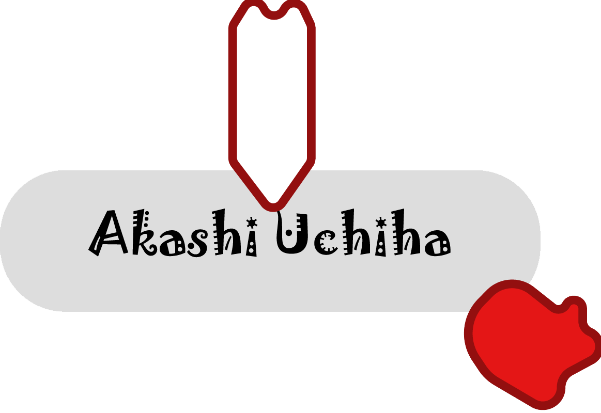
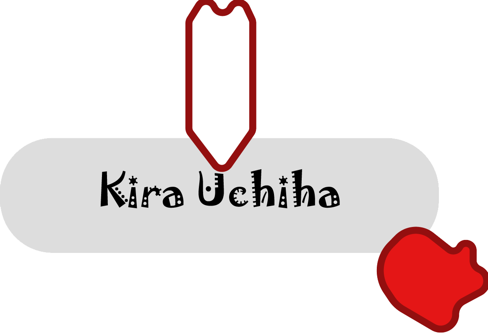
Le Prologue de Katsu Uchiha
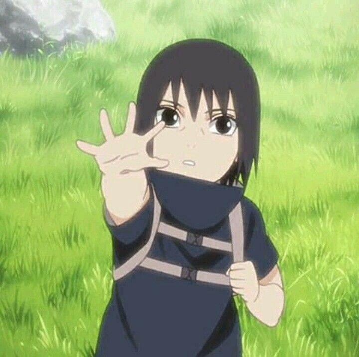
Katsu Uchiha, fils de Satsujin Uchiha est né dans le village caché de Konoha il y'a de cela 12 ans. Dès sa naissance, Katsu a été très entouré par sa famille, surtout par son père Satsujin Uchiha et ses oncles qui formaient une grande famille. Katsu s'est révélé être un enfant très intelligent et avare de savoir dès son plus jeune âge, à 8 mois seulement, il dit son premier mot "papa", à l'âge de 1 ans et demi il était en capacité de faire des phrases courtes et à 2 ans des plus longues. Effectivement, c'est à l'âge de 4 ans que Katsu aura appris à lire et à écrire il fatiguait souvent son père en lui posant multiples questions sur le monde ninja et sur son propre clan. Katsu avait beaucoup de mal à cotoyer les enfants de son âge, il préférait donc passé son temps à lire des livres dans son domaine de clan ou à s'êntrainer à l'aide des mannequins de bois présent sur la cours mais cette solitude sera compensée par l'amour que lui procure sa famille. C'est à l'âge de 5 ans aussi que Katsu commencera à grimper aux arbres et à marcher sur l'eau grâce à son chakra. Au sein de son clan cette enfance lui vaudra le titre "l'enfant précoce".
"Le talent est fait pour briller malheureusement pour toi, j'ai toujours briller"
-Katsu Uchiha
"L'enfant précoce"

En effet Katsu sera un enfant très avancé pour son âge, il perfectionnera sa première technique de Katon à l'âge de 6 ans et la première technique de Kiminari à l'âge de 8 ans. Il aura fini de dévorer tous les livres de l'académie sur l'art de la guerre dès l'âge de 10 ans, dès lors il commencera à réaliser à quel point la stratégie est la clé de la victoire en toute circonstance. Il demandera souvent conseil à des gens beaucoup plus âgés afin de mieux comprendre l'histoire de Konoha et la place de son clan dans le village bien que l'histoire de son clan lui restera encore un mystère. À l'âge de 11ans katsu aura déjà deux techniques de base du katon et du kiminari totalement maitrisées, plus tard il aura appris un style de Kenjutsu qu'il viendra à perfectionner avec le temps. Néanmoins il préférera garder certains sujets secrets, par peur de blesser la seule famille qu'il a, il taira les questions qu'il se pose secrètement, il sait peser le pour et le contre et sait que la vérité peut être parfois douloureuse.

"Ce n'est pas parce qu'on dirait que je ne sais pas, que je ne sais pas"
-Katsu Uchiha
"Le manque"

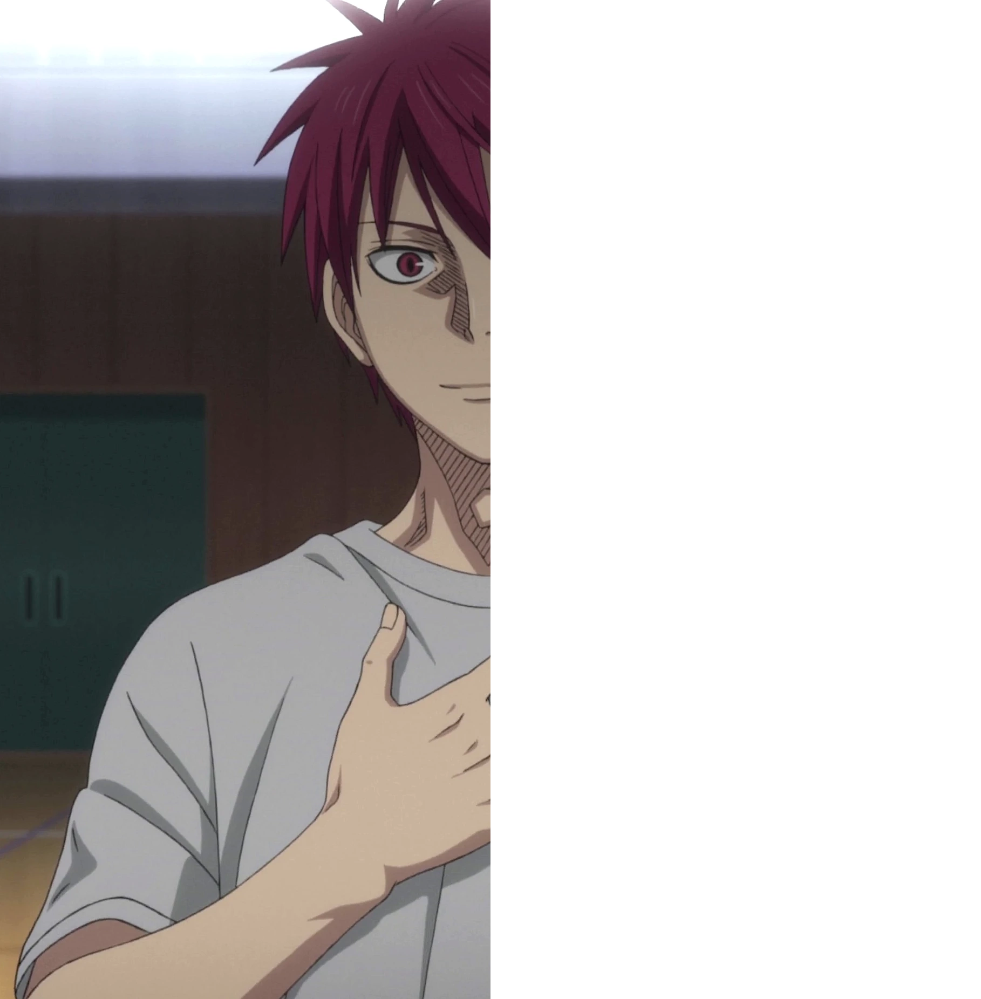
Katsu avait désormais 12 ans, sa sortie de l'académie était très proche et tous le savaient dans le clan Uchiha, notamment son père Satsujin Uchiha. Comme vous le savez déjà, le petit dernier du clan, Katsu, n'avait pas beaucoup d'amis, mais jusqu'à présent, ça ne le dérangeait pas tant qu'il avait l'amour de sa famille. Malheureusement, quelque chose arriva à l'âge de ses 12 ans : son père Satsujin quitta le village de Konoha, laissant derrière lui sa famille et son clan. Katsu ne comprit pas pourquoi son père était parti sans dire un mot, ni même un au revoir. À ce moment-là, le petit dernier du clan comprit qu'il avait perdu la chose la plus importante à ses yeux, l'amour qui lui était donné par sa famille, ce qui a causé une instabilité émotionnelle au fin fond de Katsu. Il a dès lors développé une certaine bipolarité, capable de passer d'un fils aimant et questionnant avec sang-froid les agissements de son père tout en gardant le bon soupçon à un enfant qui déteste son père et qui ne cherche plus à entendre parler de lui, le faisant passer d'un état de colère à un état de joie ou inversement. Autrement dit, notre petit dernier du Clan est désormais capable de passer d'un état à un autre à tout moment.
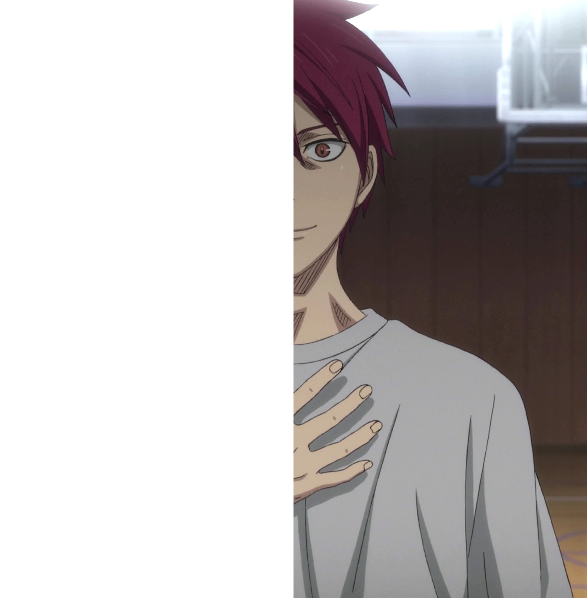
"L'amour n'est pas oxymore de haine, car haine est synonyme d'amour"
-Katsu Uchiha
La Famille Uchiha

Il y a fort longtemps, le clan Uchiha avait été démantelé, tous ses membres s'étaient sacrifiés afin de mettre fin à la grande guerre, mais un membre avait survécu.
Étant un des clans les plus puissants qui soient dans le monde shinobi, la clan Uchiha était craint et respecté, mais derrière cette crainte se cachait très souvent de la jalousie et de la haine.
Le clan uchiha est le clan avec les membres de clan les plus talentueux à l'enfance et souvent parmis les plus puissant à l'âge adulte, le clan Uchiha est principalement associé à deux attraits : leurs affinités naturelle avec le Katon et leurs puissants Dojutsu, le Sharingan.
Les uchihas souffrent d'une malédiction : la malédiction de la haine, les uchihas sont en générales des personnes très émotives mais qui ont tendances à le cacher, mais la malédiction les frappent lorsqu'ils perdent une chose qu'ils chérissaient,
dès lors le désespoir de cette douloureuse expérience provoquera une manifestation de chakra unique dans le corps d'un uchiha, le chakra fluctuant dans le cerveau impactera les nerfs optiques, créant ansi le Sharingan.
"Mes yeux sont une malédiction, ceux qui croiseront mon regard seront maudits"
-Katsu Uchiha
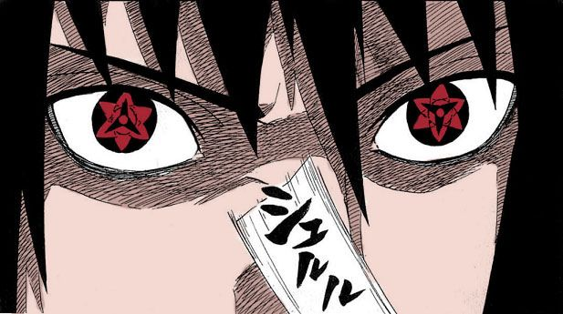

Objectif 1 :
Katsu à totalement conscience de son état psychologique actuel, c'est pourquoi son premier objectif sera de reussir à sociabiliser et avoir des amis autre que de son clan, en plus d'enquêter en parallèle sur la raison de la désertion de son père afin d'essayer de comprendre le réel problème au sein de konoha.
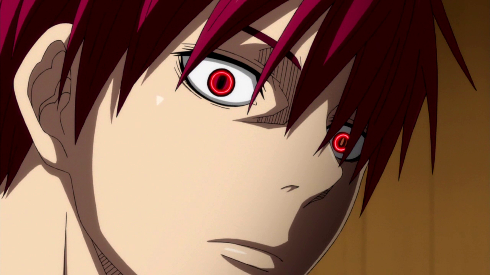
Objectif 2 :
Plus tard Katsu aimerais pouvoir se faire connaître sur le front grâce à son sens de la stratégie et à son talent qu'il ne cesse de polir depuis son enfance et qu'il continuera à polir au fur et à mesure de son aventure. Autrement dis, il voudrait devenir une grande figure de Konoha afin que la discrimination envers son clan cesse définitivement, bien que le rôle de Hokage ne l'intéresse pas.

Objectif 3 :
Beaucoup plus tard l'objectif qui se révelera à Katsu et celui de créer une armure bien spécifique au clan Uchiha, elle aurait comme but de "compresser, canaliser" l'armure du susano dans une armure qui ferait la taille d'un corps humain, afin de pouvoir combiner la force destructrice de celui ci à l'agilité époustouflante du clan Uchiha.
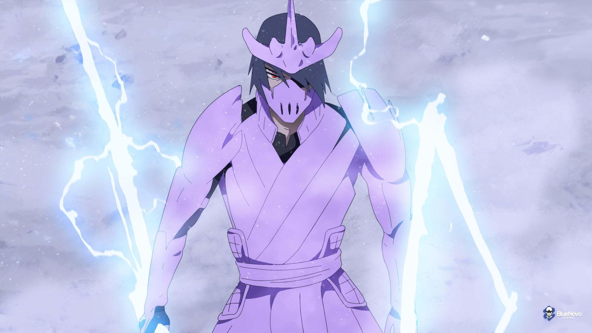

Qualités
- Sérieux
- Loyal
- Déterminé
- Courageux
- Honnête
- Intelligent
- Grand stratège
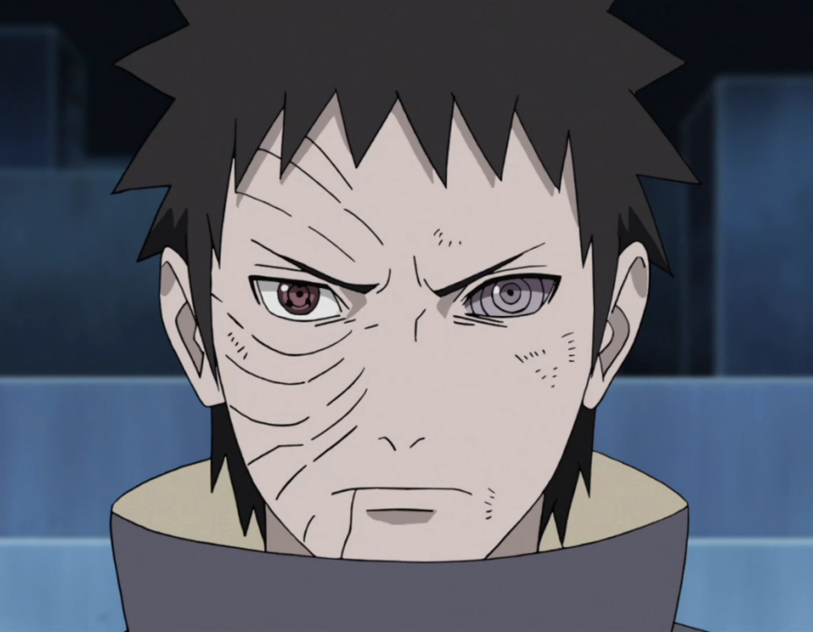
Défauts
- Froid
- Distant
- Solitaire
- Peu sociable
- Peu expressif
- Très peu empathique
- peu enclin à la confiance
Mes disponibilités :
16h-3h
Mardi
16h-3h
Mercredi
16h-3h
Jeudi
16h-3h
Vendredi
16h-3h
Samedi
16h-3h
Dimanche
16h-3h
Car Oui
Je veux de cette fumée